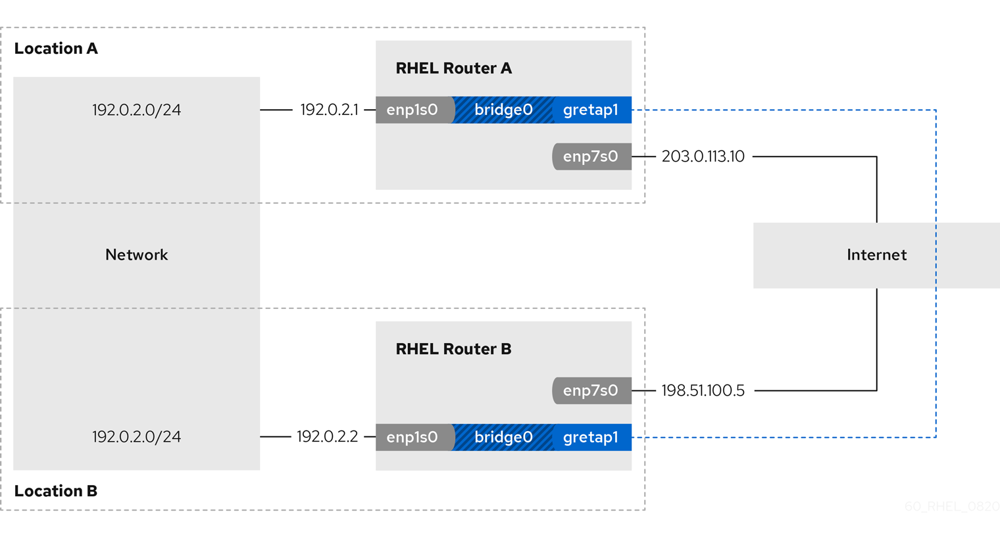

Configuring a GRETAP tunnel to transfer Ethernet frames over IPv4
-
Each RHEL router has a network interface that is connected to its local network, and the interface has no IP configuration assigned.
-
Each RHEL router has a network interface that is connected to the internet.
A Generic Routing Encapsulation Terminal Access Point (GRETAP) tunnel operates on OSI level 2 and encapsulates Ethernet traffic in IPv4 packets as described in RFC 2784.
Data sent through a GRETAP tunnel is not encrypted. For security reasons, establish the tunnel over a VPN or a different encrypted connection.
For example, you can create a GRETAP tunnel between two RHEL routers to connect two networks using a bridge as shown in the following diagram:

-
On both routers, verify that the
enp1s0andgretap1connections are connected and that theCONNECTIONcolumn displays the connection name of the port:# nmcli device nmcli device DEVICE TYPE STATE CONNECTION ... bridge0 bridge connected bridge0 enp1s0 ethernet connected bridge0-port1 gretap1 iptunnel connected bridge0-port2 -
From each RHEL router, ping the IP address of the internal interface of the other router:
-
On Router A, ping
192.0.2.2:# ping 192.0.2.2 -
On Router B, ping
192.0.2.1:# ping 192.0.2.1
-